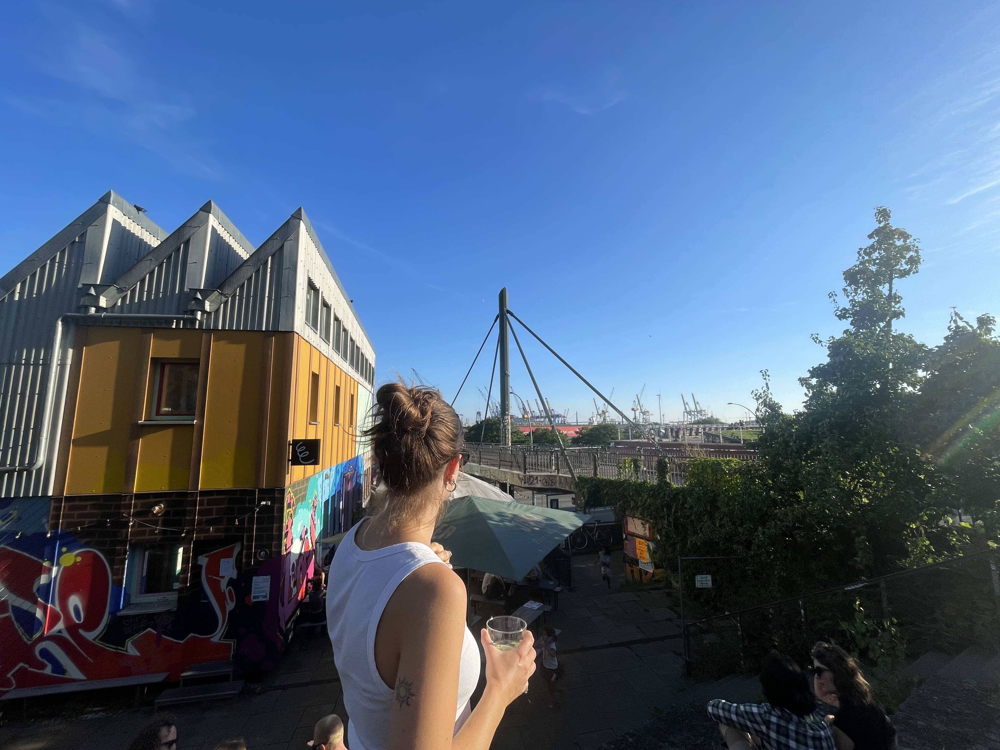

About Me

Hi and welcome to my page! I'm Paula Holz, a Sociology und Communication and Media Studies Student from Bremen, Germany. I love to travel and this has brought me here to Madeira. As an Erasmus Student I'm learning to create accessible, responsive interfaces and much more. In my future I'll study to become a primary school teacher. This page is created to share all the knowledge and experiences I'll gain on my way there. Stay tuned!
Skills
Timeline
2013 – 2021
High School Diploma (Abitur)
Gymnasium Allee, Hamburg
since 2022
Bachelor Studies
Universität Bremen — Sociology, Communication & Media Studies
Expected Graduation: 2026
2021 – 2025
Mini-Jobs
Hospitality, healthcare & childcare
Apr – Aug 2022
Work & Travel
Australia & Indonesia
Feb – Apr 2025
Internship
Landesfrauenrat Bremen — PR & Social Media
Sep 2025 – Jan 2026
Erasmus Semester Abroad
Universidade da Madeira
CV
Learn more about me and my work here: